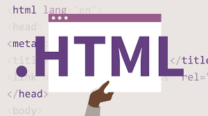

Hypertext Markup Language is the standard markup language used for creating web pages and web applications. Alongside Cascading Style Sheets (CSS) and JavaScript (JS), it forms the triad of the World Wide Web (WWW).
A web browser would typically receive HTML documents from either a web server or local storage. These documents are then rendered into multimedia web pages by the browser for viewing by a user and as such; one can say that these documents basically make up the structure of a web page semantically and originally, cues for the appearance of the document.